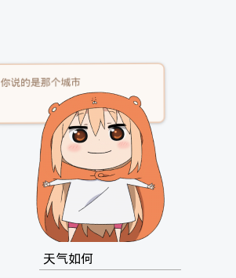

之前折腾了不少Hexo的玩法，也写过零星的几篇Hexo文章，为了便于查阅这里做个整合。
自从迁移到Next主题后就发觉这也许是实用性最好的Hexo主题，以后大概率不会更换其他主题，所以以后一些个性化修改也只基于他。
博客项目目录：_config.yml # Hexo主配置
public/
source/
_drafts/
_posts/
themes/
next/
_config.yml # Next主题配置
开启Mathjax支持
参考：https://murphypei.github.io/blog/2019/03/hexo-render-mathjax.html
Hexo的markdown解释器默认不支持Latex等数学格式，但是我们可以通过安装第三方库来解决这一问题。
使用Kramed代替Marked
Hexo默认的渲染引擎是marked，但是marked不支持mathjax。 kramed是在marked的基础上进行修改。我们在工程目录下执行以下命令来安装kramednpm uninstall hexo-renderer-marked --save
npm install hexo-renderer-kramed --save
解决冲突
当安装完成后，部分mathjax代码渲染依然可能有问题，原因是和markdown语法有冲突。例如*可能会被识别成加粗标记，解决办法是采用mathjax的转义符\ast。而|会和表格符冲突，应使用过\vert。
但是下标符_和markdown的斜体标记冲突，需要手动修改解析规则。修改：node_modules/kramed/lib/rules/inline.js。
替换11行和20行// escape: /^\\([\\`*{}\[\]()#$+\-.!_>])/,
escape: /^\\([`*\[\]()#$+\-.!_>])/,
...
// em: /^\b_((?:__|[\s\S])+?)_\b|^\*((?:\*\*|[\s\S])+?)\*(?!\*)/,
em: /^\*((?:\*\*|[\s\S])+?)\*(?!\*)/,
对于Hexo Next主题，需要在Next主题的_config.yml中额外配置：mathjax:
enable: true
per_page: true
cdn: //cdn.bootcss.com/mathjax/2.7.1/latest.js?config=TeX-AMS-MML_HTMLorMML
最后重新生成：hexo clean && hexo g
博文中开启mathjax
--- |
此时已经可以在Hexo中使用mathjax编写数学公式了。测试一下：
添加可对话的Live2D看板娘
Live 2D是一种应用于电子游戏的绘图渲染技术，由日本Cybernoids公司开发，通过一系列的连续图像和人物建模来生成一种类似二维图像的三维模型，换句话说就是2D的素材实现一定程度的3D效果，但只能是一定程度3D，因为Live 2D人物无法大幅度转身。Hexo提供了hexo-helper-live2d插件来引入live 2D看板娘。
创建看板娘
使用命令npm install --save hexo-helper-live2d安装live2d模块。再安装umaru模型：npm install --save live2d-widget-model-umaru
编辑_config.yml写入配置：
live2d:
enable: true
pluginModelPath: assets/
model:
#模板目录，在node_modules里
use: live2d-widget-model-umaru
display:
position: left
width: 200
height: 200
hOffset: 20 #水平偏移
vOffset: 50 #垂直偏移
mobile:
# 在手机端显示
show: false
rect:
opacity: 0.7
添加对话框
继续修改_config.yml:live2d:
dialog:
enable: true #开启对话
hitokoto: true hexo-helper-live2d还提供了对话框，开启hitokoto可以间隔时间弹出随机对话框。我联想到之前做过一个聊天机器人（用的图灵机器人API），可以在这里加个输入框，做成可以交互的看伴娘。本人使用的Hexo博客是Next主题，主题位于blog/themes/next。
首先需要创建一个输入框，在next的layout目录下创建一个live2d_dialog.swig的模板文件，在这里完成对话框的定制。写入HTML和CSS代码：`<div id="chat_input">
<input id="question" type="text" placeholder="陪我聊聊天吧" onkeypress="return onKeyPress(event)"/>
</div>
<style>
#chat_input{
width: 200px;
height: 40px;
position: fixed;
bottom: 5px;
left: 50px; /*由于我的模型配置在左边，这里需要向左对齐*/
}
#question{
border: none;/*取消输入框边框*/
border-bottom: 1px #aaaaaa solid;/*设置下边框*/
background-color: transparent;/*背景透明*/
padding: 5px;
}
/*手机端不显示*/
@media screen and (max-width: 480px) {
#chat_input{
display: none;
}
#live2d-widget{
display: none;
}
}
</style>
然后是提交对话的事件：
<script> |
这里使用了图灵机器人的API，可以去http://www.tuling123.com上申请一个KEY，每天有固定免费调用次数。
最后将live2d_dialog.swig嵌入到layout目录下的_layout.swig的末尾： {%- endif %}
<!--在此引用-->
{% include 'live2d_dialog.swig' %}
<!--在此引用-->
</body>
</html>
启动博客看看效果：

优化Disqus提示
我还是倾向与免费又好看的评论插件Disqus，但是它只有科学上网才能使用。为了避免天朝局域网下无法看到评论区，这里在Disqus无法加载的时候加个提示。
修改themes/next/scripts/filters/comment/disqus.js。在disqus_thread的div里添加提示：
// Add comment |
开启Markdown Mermaid
安装依赖：npm install hexo-filter-mermaid-diagrams --save
编辑themes/next/_config.yaml中开启mermaid并配置CDN# Mermaid tag
mermaid:
enable: true
# Available themes: default | dark | forest | neutral
theme: forest
# CDN
vendors:
mermaid: //cdnjs.cloudflare.com/ajax/libs/mermaid/8.4.8/mermaid.min.js
参考Hexo如何在线可视化写博客
开启Markdown Flowchart
安装依赖：npm install hexo-filter-flowchart --save
编辑themes/next/_config.yaml中开启mermaid并配置CDNflowchart:
# raphael: # optional, the source url of raphael.js
# flowchart: # optional, the source url of flowchart.js
options: # options used for `drawSVG`
# CDN
vendors:
mermaid: //cdnjs.cloudflare.com/ajax/libs/mermaid/8.4.8/mermaid.min.js
常见问题
这里汇总Hexo使用期间的一些常见问题和解决方案
- 【2021/2/2】 Hexo在
deploy后，在gitpage上无法加载Mathjax渲染公式。检查Chrome控制台发现Mathjax CDN标红：blocked:mix-content。这是浏览器不允许在https页面里嵌入http的请求。解决办法当然就是不要使用http请求，把网站上的http请求都迁移到https。在博文模板中找到<head/>标签<meta http-equiv="Content-Security-Policy" content="upgrade-insecure-requests">
- 【2021-06-18】
line.MatchAll(): TypeError : undefined is not a function。因为line.MatchAll()被最新的Hexo使用，需要将node升级到12。sudo npm cache clean -f # 清缓存
sudo npm install -g n # n模块
sudo n 12 # 安装node 12
node -v # 再次检查版本